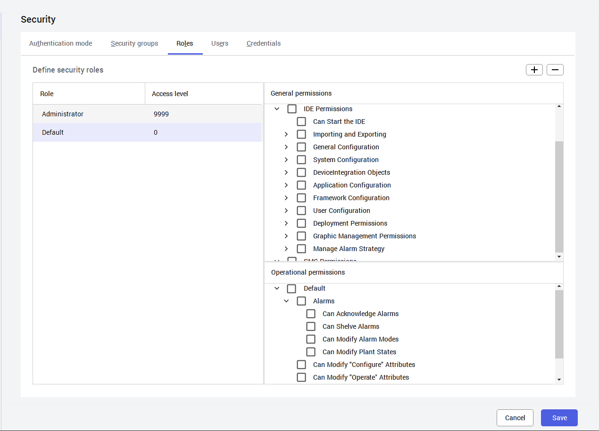
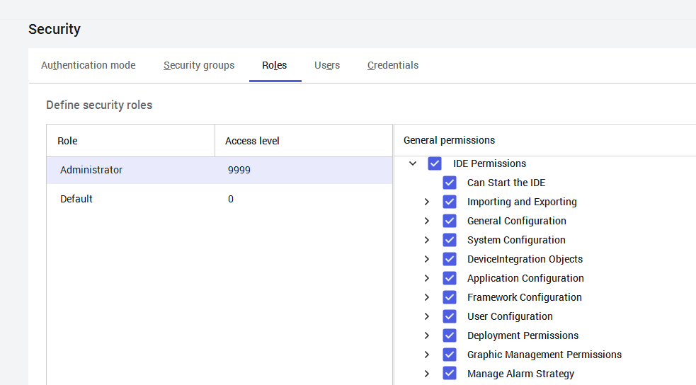
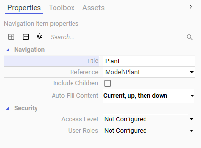
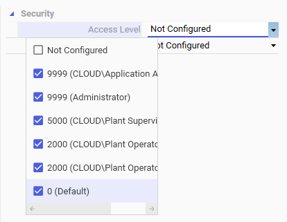
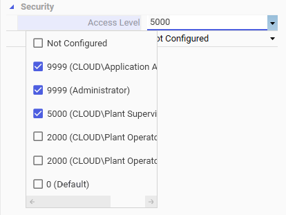
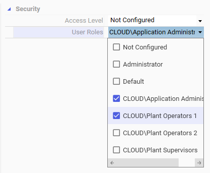

Module 8 — Security | Pages 435-444
Section 1 – Security Overview
Section 1 – Security Overview
Introduction
The security system in Application Server is a global function that applies to every object in the
Galaxy database. It is a relationship-based security system between users and the objects and
functions of the Galaxy.
The security system allows system administrators to easily define users and assign the operations
they can perform. Security permissions are defined in terms of the operations users can perform
using automation objects. It also supports multi-user environments, in both development and
runtime.
Authentication Modes
Security for the Galaxy is enabled in the System Platform IDE. When enabling Galaxy security, the
following authentication modes are available:
Galaxy: Uses local Galaxy configuration to authenticate users. All security for the Galaxy
is specified and contained at the Galaxy level. When the user logs on, security credentials
are checked, and access to areas and activities is granted at the Galaxy level.
OS User based: Uses the user authentication system of the operating system on an
individual user level. All security for the Galaxy is specified and contained in the operating
system on a user-level basis. When the user logs on, security credentials are checked,
and access to areas and activities is decided at the OS-user level.
OS Group based: Uses the user authentication system of the operating system on a
group basis. All security for the Galaxy is specified and contained in the user-to-roles
mapping created in the operating system to assign security. When a user logs on, security
credentials are checked and verified at the OS group level. OS groups are mapped to
security roles in the Galaxy to allow access to areas and activities in the Galaxy.
Authentication providers: Uses the AVEVA Identity Manager (AIM) to create a unified
security management infrastructure across your local System Platform nodes and Azure
VMs by leveraging operating system security and Azure Active Directory (AD). Refer to
your System Platform documentation for more information about the AVEVA Identity
Manager and configuring Azure AD as an identity provider.
Security Users
With OS User Based and OS Group Based authentication modes, operating system users with
local accounts are added as authorized users for the Galaxy. If OS Group Based is selected, the
local account must exist on each node in the Galaxy for successful authentication of users on any
computer in the Galaxy.
Two users are defined by default: Administrator and DefaultUser. These cannot be deleted in an
open security setting and both are associated with default roles.
This section provides an overview of security in Application Server, including authentication
modes, permissions, roles, and users.

Security Roles
You can create and manage user roles that apply to your organization’s processes and work-
based authorities. Two roles are defined by default: Administrator and Default.
Roles are listed with an assigned Access level, which is an integer from 0 to 9999. Access level
can be used in graphic animations for security purposes, and to configure navigation item security
in a ViewApp.
General and Operational Permissions
You can specify General and Operational permissions for each role:
General permissions relate to application configuration and administrative tasks.
Operational permissions relate to security groups listed on the Security Groups page.
By default, the Administrator and Default roles have all permissions. All users belong to the Default
role and this relationship cannot be changed. Therefore, it is highly recommended that you remove
all permissions from the Default role.

Section 1 – Security Overview
General Permissions for Industrial Graphics Management
The list of General permissions includes the permission “Graphic Management Permissions,”
which is specific to industrial graphics.
Security Audit Trail
The Galaxy generates events for user actions, such as users logging in or logging off an
application, successful and failed attempts to write to an attribute, and others. Event messages are
logged to history blocks or the Alarms and Events database through Historian Server and can be
retrieved for future analysis and reporting.
Section 2 – ViewApp Security
Section 2 – ViewApp Security
Introduction
A ViewApp has built-in security that is integrated with Galaxy security. Industrial graphics can be
shown or hidden during runtime in the ViewApp, based on current logged in user information. For
example, you can use the current logged in user information as a condition to configure the
visibility animation for a specific graphic element. If the condition is true, the graphic will display at
runtime.
During runtime, ViewApp navigation items can be shown or hidden based on the access level
assigned to, and/or user roles selected for, the navigation items. The navigation item will be visible
only to logged in users who satisfy each of these conditions, if configured. Using access levels and
user roles to control the display of content in a ViewApp is an effective way of preventing access to
a ViewApp's sensitive controls from unauthorized users.
Before you implement security in a ViewApp, the following must be completed:
Security must be enabled for the Galaxy with an authentication mode of Galaxy, OS User
Based, or OS Group Based. Additionally, roles and users must be created and configured
with the proper Operational permissions.
Based on the authentication mode you select, ViewApp users must be added to the
security system with a user name and password. The user should be associated with a
role in the security authentication system with a defined Access Level.
Major tasks for implementing security for ViewApps include the following:
Implement login security within the ViewApp by using the security-related method
ShowLoginDialog(), for example, in an action script of a button. Additionally, the
TitleBarApp has an optional Login button, which the user can use to login, switch users,
and logout of the running ViewApp.
Implement visibility or disable animations using security-related attributes within the
symbols that are going to be used as content of the ViewApp. For example,
MyViewApp.Security.LoggedInAccessLevel can be used.
Configure the Access Level property for a navigation item in the ViewApp, which
determines whether the navigation item and its referenced hierarchy are accessible in
runtime.
This section describes how to implement security in a ViewApp.

Navigation Item Security Properties
Security properties can be configured to implement various types of navigation item security. The
Access Level property specifies the access levels associated with a navigation item. The User
Roles property specifies one or more user roles associated with the navigation item. If both the
Access Level and User Roles properties are configured, both conditions must be satisfied for the
navigation item to be visible to the logged-in user at runtime.
When a navigation item is selected in the ViewApp Editor, the Access Level and User Roles
properties are available in the Security category on the Properties tab. They are set to “Not
Configured” by default.
Security
Security Item Property
Configurations
Security Item Visibility Requirements
No security
Access Level = Not Configured
User Roles = Not Configured
Navigation item always visible
Access Level Only
security
Access Level = Integer
in the range 0-9999
User Roles = Not Configured
Security must be configured in the Galaxy.
User must log in to the ViewApp.
Logged-in user must have an access level
equal to or higher than the specified value
The logged-in user can belong to any role.
User Roles Only
security
Access Level = Not Configured
User Roles = Role1,Role2,Role3
Security must be configured in the Galaxy.
User must log in to the ViewApp.
Logged-in user can be assigned any access
level.
Logged in user must be a member of at
least one of the specified user roles.
Access Level and
User Role security
Access Level = Integer
in the range 0-9999
User Roles = Role1,Role2,Role3
Security must be configured in the Galaxy.
User must log in to the ViewApp.
Logged-in user must have an access level
equal to or higher than the specified value
Logged in user must be a member of at
least one of the specified user roles.


Section 2 – ViewApp Security
To configure the Access Level property, click the down-arrow to the right of the Access Level
property and select an access level from the drop-down list. The list includes access levels
assigned to security roles in the Galaxy. Selecting an access level from the list automatically
selects access levels greater than or equal to the one selected. The following example shows the
result of selecting the 0 (Default) access level.
Or, you can click the Access Level field, enter a numerical value, and press Enter. The following
example shows an Access Level value entered as 5000.

To configure the User Roles property, click the down-arrow to the right of the User Roles property,
and select one or more user roles. The following example shows two user roles selected:
Cloud\Application Administators and Cloud\Plant Operators 1.
Note that if a parent navigation item is not visible during runtime because the logged in user does
not meet the requirement based on the security settings for this navigation item, then all child
navigation items are also hidden from this user, regardless how the security configurations of the
child items are configured.
Security-Related Functions
A typical login interface includes a login button and a logout button. The login button displays an
interface to allow a user to enter their user name and password to gain access to the ViewApp.
The logout button logs the user off the ViewApp. Additionally, information about the logged-in user
can be displayed in the ViewApp at runtime.
The following Action Script functions can be used to show a login dialog box and to log a user out
of the ViewApp:
Function
Description
ShowLoginDialog()
Shows a login dialog box with fields to enter a user name and password.
LogOff()
Logs a user off of a ViewApp.
Section 2 – ViewApp Security
Security Namespace and Security-Related System Attributes
Security-related system attributes operate in the MyViewApp.Security namespace. The names of
the security attributes are specified with the prefix MyViewApp.Security. For example, you might
use MyViewApp.Security.attribute_name.
Note that the first time the Preview session is launched from the ViewApp Editor, the current
Windows user will automatically attempt to log on the Preview session.
The Single Sign-On feature can be enabled or disabled by setting the AutoLogonCurrentUser
attribute of the Security namespace to True or False.
Single Sign-On Security for OMI Apps
OMI Apps that use the Single Sign-On feature (SSO) will run in the context of the logged on
ViewApp user. Messages will appear if the current logged on ViewApp user is not a valid user for
the OMI Apps, or does not have enough permissions to access the functions of the OMI Apps.
For example, the InSightApp is an OMI App that uses the single sign-on service of the ViewApp.
More information about the InSightApp is provided in Module 10.
Credential Management for ViewApps
Additional security credentials may be needed for some ViewApps to gain access to third-party
data and applications that do not support standard authentication methods, such as Windows OS
credentials, Active Directory, or OpenID Connect. You can add these credentials on the
Credentials tab in the Configure Security dialog box.
Refer to the documentation that came with your product for details about managing credentials.
Review the key concepts section above for the core topics discussed.
Consider how the concepts in this lesson fit into the broader System Platform and OMI framework.